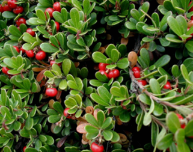
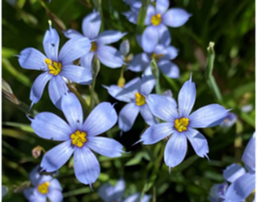
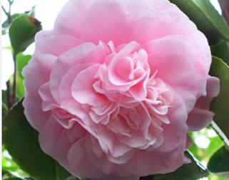

This bushy evergreen shrub produces clusters of tightly-packed brightly colored blooms. Color options include red, purple, orange, yellow, and white, often mixed in the same group. Providing color to seemingly dull patches. After frost, the flowers give way to purple berries that birds and small mammals feast on. Dwarf and trailing cultivars are also available.
Although this option is mainly known as a favorite in the world of cut flowers and bouquets, it deserves a spot in the garden too. This perennial flower produces clouds of pink or white tiny flowers, looking attractive in itself or adding contrast to most other flowers. It grows up to three feet tall in decorative mounds, and the flowers are long-lasting until fall.

This is a slow-growing evergreen shrub that is extremely winter hardy. The red stems produce glossy green leaves that turn red to purple in the winter. In mid to late spring, it forms graceful clusters of white to pink flowers. After several weeks the blooms give way to bright red berries that provide an essential source of winter nutrients for birds and mammals, including bears.

This semi-evergreen perennial is prized for its dense, narrow grass-like foliage adorned with delicate violet star-shaped flowers. The centers of the petals are black in color with bright yellow stamens. This flower looks excellent along walkways, rockeries, or naturalizing plants. It will self-seed in optimal conditions and prefers full to partial sun.

There are around 250 species of Camellia, and Camellia sasanqua is a gorgeous fall flower. As the rest of your garden begins to fade, the Camellia opens and extends the colorful joy of your garden. Depending on where you live, they can continue blooming well into winter. They grow to around three inches wide, and each flower only lasts a few days. The shrub itself can grow up to 12 feet tall. Colors range from white, light pink, rose to cherry red and are delicately scented.
Sometimes referred to as the Arum Lily, it is a flowering plant native to South Africa. They need full sun and constantly moist soil and are perennials in subtropical and tropical climates. There are two types of Zantedeschia; either hardy or tender. Hardy Zantedeschias tend to be pure white, and they can survive the winter and emerge in the spring. Tender Zantedeschias feature almost every color of the rainbow, and there’s even a black Calla Lily. They have chalice-shaped flowers (spathe) that surround a finger-like stalk (spadix.) Wherever you place them in your garden, they'll take center stage for sure
This is a semi-hardy annual cosmos flower that is noted for its unique shape. It boasts extra large, single, pure white-colored flowers up to five inches across. It looks like a cupcake because the petals are fused together, forming a bowl around the yellow center. The foliage is light and feathery, adding an extra layer of delicate design. It needs full sun and grows up to four feet tall.
Tough evergreen shrub with clusters of pink, white or red funnel-shaped flowers. ID tip: long glossy leaves in pairs or whorls. Widely planted and self-seeding along waterways and roadsides; toxic but used as an ornamental hedge
commonly known as the treasure flower or African daisy, is a vibrant, sun-loving flowering plant in the Asteraceae family native to southern Africa. Highly drought-tolerant and resilient, it is widely grown as an ornamental groundcover
Nymphaea nouchali var. caerulea, or simply Nymphaea caerulea, also known as blue lotus or blue water lily among many other names, is a water lily in the genus Nymphaea, a botanical variety of Nymphaea nouchali